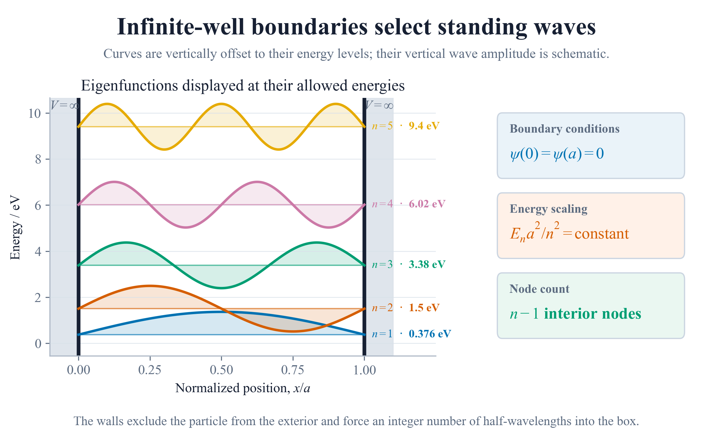
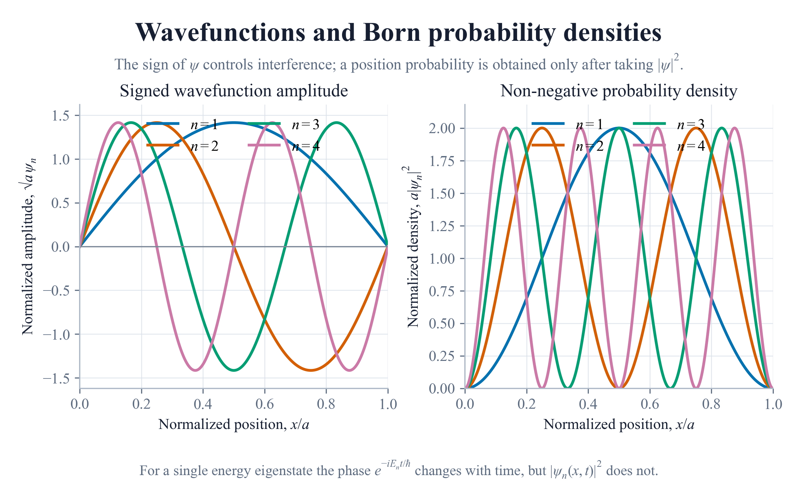
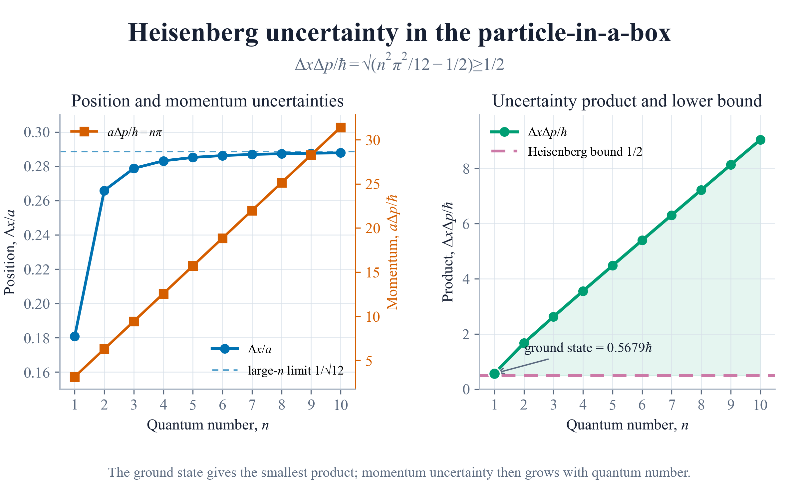

ψn(x,t) = √(2/a) sin(nπx/a)e−iEnt/ℏ
Defined for 0 < x < a, with ψ(0) = ψ(a) = 0 and n = 1, 2, 3, …One electron · one-dimensional infinite well
No in-between. Only allowed.
Infinite walls force standing waves. Their boundary conditions admit integer quantum numbers, discrete energies, and probability patterns that remain stationary in time.
Live eigenstate laboratory
Loading validated states
Checking evidence
Reading 8,004 validated state samples
The validated Task 7 eigenstates could not be loaded.
Signed wavefunction, ψ
Probability density, a|ψ|²
The plotted phase is fixed; a stationary density does not move.- Energy
- —
- Relative energy
- —
- Interior nodes
- —
- ΔxΔp / ℏ
- —
Allowed energies
10
State samples
8,004
Independent checks
37/37
No curve is animated as particle motion. For a single energy eigenstate, the global phase changes but |ψn|² does not.
Boundary conditions write the spectrum
The walls choose whole half-waves.
The wavefunction must vanish at both infinite walls. That single condition selects positive integer n, fixes the node count, and makes the energy quadratic rather than continuous.En = n²π²ℏ² / 2ma²
|ψn|² = (2/a) sin²(nπx/a)
Nnodes = n − 1
V(x)
0
inside · 0 < x < a
∞
outside · x ≤ 0 or x ≥ a
ψ cannot leak through an infinite wall.
Official plot one
Energy climbs as n².
Stems and markers keep the allowed states visibly discrete. Select any marker to synchronise the complete page; no line implies energies between the integers.
Selected level
n = 1 · 0.376030 eV
En / E1 = n² exactly
Evidence loadingThe validated energy spectrum could not be loaded.
Electron in a 1.00 nm box.
Exactly 100 times the ground energy.
Adjacent levels separate as n rises.
Official plot two
More energy creates more structure.
All four required densities are normalized, non-negative, zero at both walls, and symmetric about the midpoint. Toggle states to inspect their nodes without conflating density with signed amplitude.
Visible densities
Axes use x/a and a|ψ|², so the area remains one.
The validated probability densities could not be loaded.
At the wallsa|ψ(0)|² = a|ψ(a)|² = 0
Normalization∫₀¹ a|ψ|² d(x/a) = 1
Symmetry|ψ(x)|² = |ψ(a−x)|²
Nodesn − 1 interior zeros
Official extension · completed
Confinement never beats the bound.
The complete LaTeX derivation evaluates both position moments and both momentum moments. Every positive integer state obeys ΔxΔp ≥ ℏ/2; even the minimum ground-state product is strictly larger.⟨x⟩ = a/2
Δx = a√(1/12 − 1/2n²π²)
⟨p⟩ = 0
Δp = nπℏ/a
ΔxΔp = ℏ√(n²π²/12 − 1/2)
n = 1 · 0.567862ℏ > 0.5ℏ
Heisenberg product
Ground state selected
Pink rule = ℏ/2
The validated uncertainty evidence could not be loaded.
Four-page accepted extension
Analytical proof + independent numerical evidence
Read PDF
LaTeX source
Accessible text
Independent computational check
A second solver finds the same states.
A tridiagonal finite-difference Hamiltonian uses none of the analytical energy formula. Five grid refinements independently converge to the first ten levels at the expected second-order rate.Five deterministic refinements.
Across all first ten energies.
Matches central-difference order two.
Every finest-grid state.



Reproducible evidence
Validated before interaction.
Scientific state
Loading committed evidence
Controls remain locked until the manifest, 37-check report, all state rows, uncertainty values, and numerical study agree.
Boundaries, normalization, orthogonality, nodes, energy and uncertainty.
Independent scalar anchors for energy, moments, and the ground product.
2400×1500 analytical figures plus a 3840×2160 summary.
Any missing or inconsistent file leaves every control disabled.